Tottori, Tottori: things to do, food and stays
Tottori · Tottori
Tottori
Highlighted on the Tottori map.

Stay
グリーンリッチホテル鳥取駅前（人工温泉 二股湯の華）

Gurinritchi Hotel Tottori Ekimae (Jinko Onsen Futamata Yu No Hana)
Hotel at Jinko Onsen in Eirakuonsen, Tottori with a large communal bath and business travelers.
アパホテル〈鳥取駅前〉
APA Hotel < Tottori Ekimae >
鳥取温泉観水庭こぜにや
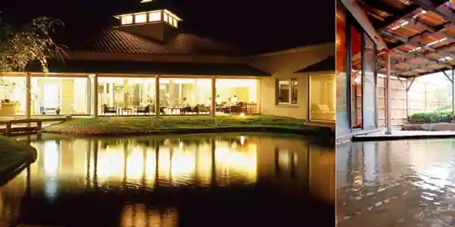
Tottori Onsen Kan Mizuniwa Kozeniya
Inn at Tottori Onsen in Eirakuonsen, Tottori with free-flowing hot spring baths.
ホテルニューオータニ鳥取
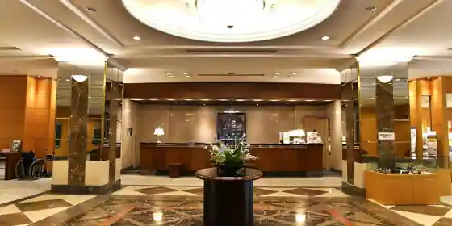
Hotel Nyuotani Tottori
Hotel in Ima, Tottori with parking.
スーパーホテル鳥取駅北口
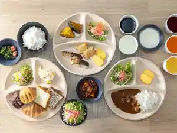
Super Hotel Tottori Eki Kitaguchi
Hotel in Ima, Tottori with breakfast available.
ドロップイン鳥取（Drop Inn TOTTORI）
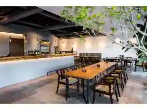
Doroppuin Tottori (Drop Inn TOTTORI)
鳥取グリーンホテルモーリス
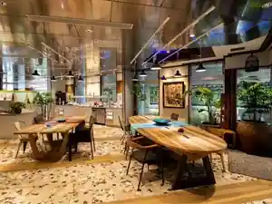
Tottori Gurin Hotel Morisu
Hotel in Ima, Tottori with a large communal bath.
スーパーホテル鳥取駅前
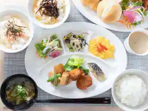
Super Hotel Tottori Ekimae
ホテルＲＥＳＨ（レッシュ）鳥取駅前
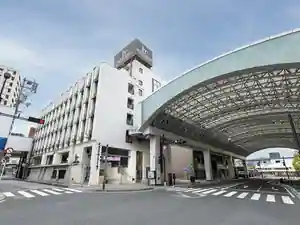
Hotel RESH(Resshu) Tottori Ekimae
Hotel in Sakae, Tottori with a sauna and a large communal bath.
アパホテル〈鳥取駅前南〉
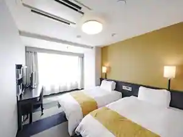
APA Hotel < Tottori Ekimae Minami >
東横ＩＮＮ鳥取駅北口
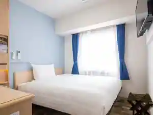
Toyoko INN Tottori Eki Kitaguchi
Inn at Tottorishieiraku Onsen in Eirakuonsen, Tottori.
東横ＩＮＮ鳥取駅南口
Toyoko INN Tottori Eki Minamiguchi
Inn in Tomiyasu, Tottori; 2-minute walk from Jrtottori Station.
Dining
かに吉

Kani Kichi
みつき
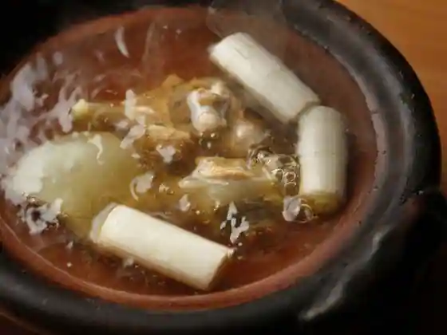
Mitsuki
味暦あんべ
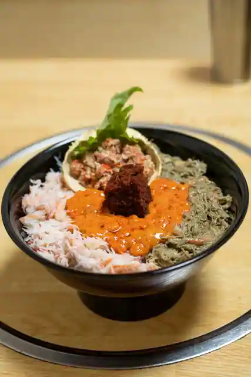
Aji Koyomi Anbe
まつやホルモン店
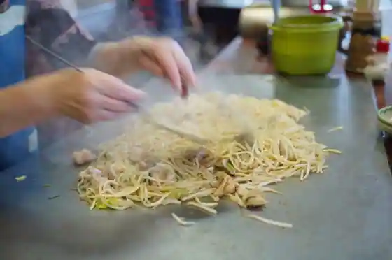
Matsuya Horumon
ファロ トラットリア
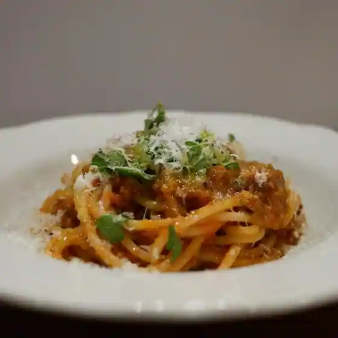
Faro Trattoria
笹すし
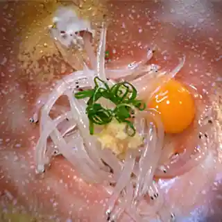
Sasa Sushi
御縁
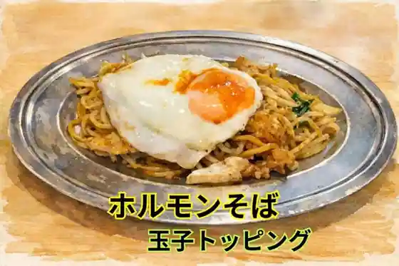
O Heri
旬魚 たつみ 鳥取店
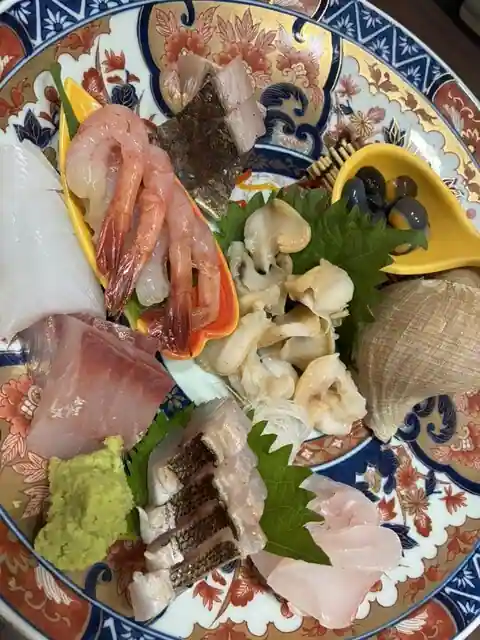
Shungyo Tatsumi Tottori
渡部旅館
Watanabe Ryokan
プリン専門店 トット プリン
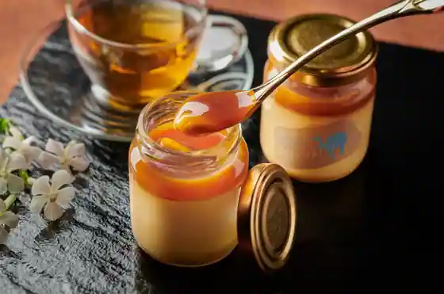
Purin Senmon Totto Purin
鯛喜
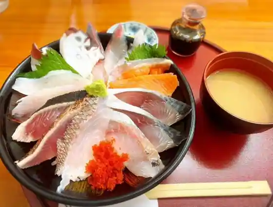
Tai Ki
たくみ割烹店
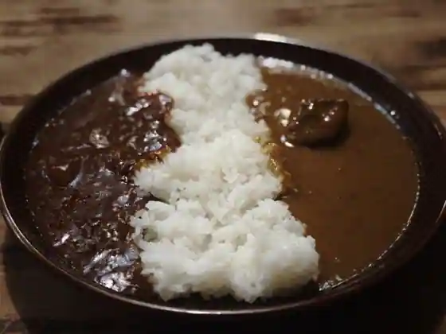
Takumi Kappo
KAEN
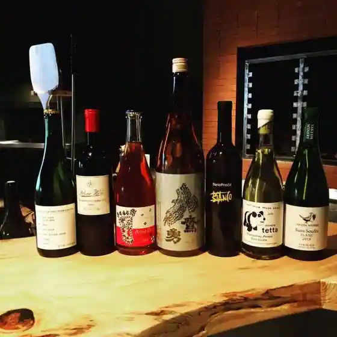
KAEN
田久
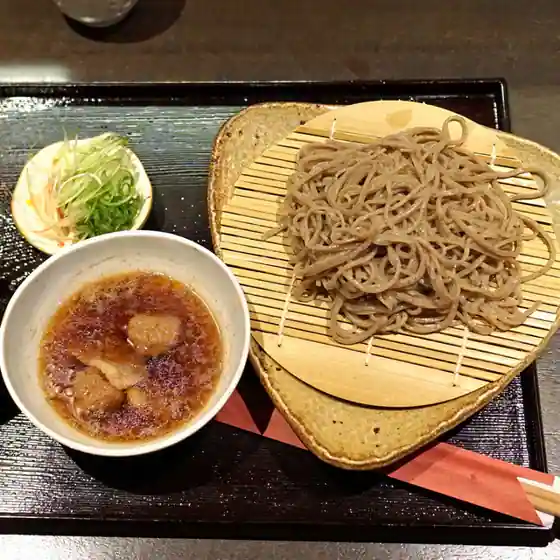
Takyu
ご馳家 ぐらっちぇ 本店
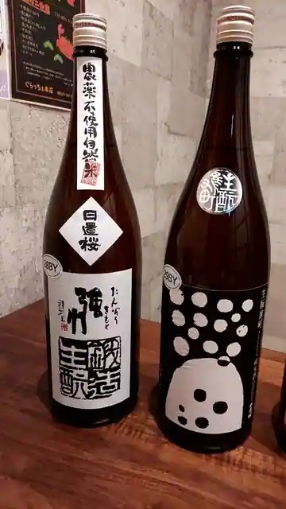
Go Chi Ie Guratchie Hon
ホット・エアー・コーポレーション
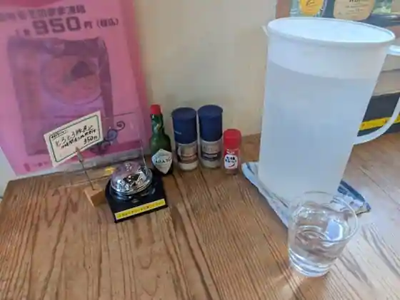
Hotto Ea Koporeshon
回転すし北海道 湖山店

Kaiten Sushi Hokkaido Koyama
四川担担麺 蒼雲
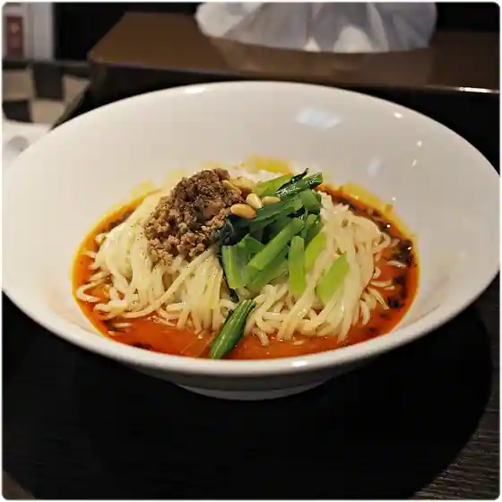
Shisen Tantan Men Ao Kumo
鳥人
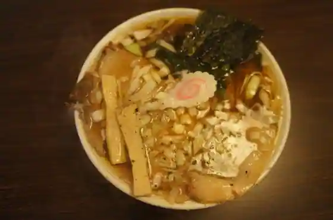
Chojin
関東風うなぎ 梅乃井
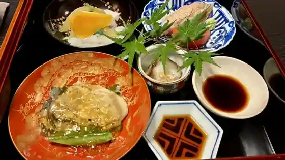
Kantofu Unagi Umeno I
海鮮問屋 村上水産 鮮魚部
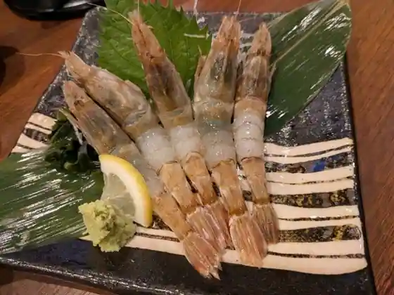
Kaisen Tonya Murakami Suisan Sengyo Bu
木の香り
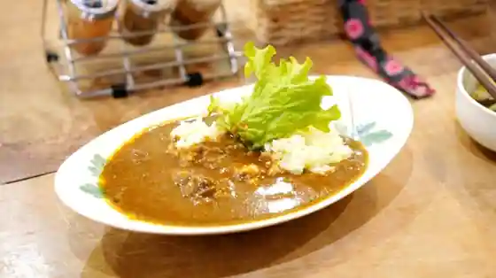
Ki No Kaori
タカハマカフェ
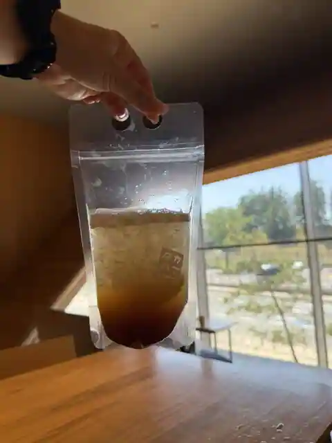
Takahama Cafe
賀露港・市場食堂
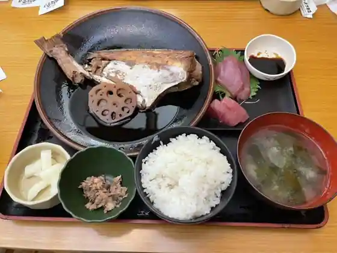
Ga Tsuyu Minato Shijo Shokudo
Sights
Tottori Sakyu
Shirosagi Shrine

Shirosagi Coast
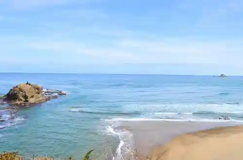
Sakyu Onsen Fureai Hall

Ame Taki
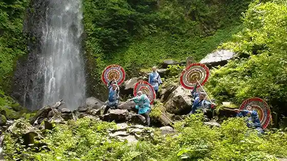
Tottori Onsen
Tottori Minato Kaisen City Ba Karoichi
Tottori Castle Ruins Hisamatsu Park
Tottori Toshogu (Buna Kei Shrine) Buna Kei Park
Hama Village Onsen
Tottori Sakyu Suna no Art Museum
Rakkyo no Hana
Kano Castle Ruins Park
Kano Onsen
Roadside Station Shinwa no Sato Shiro Usagi
Tottori Mingei Art Museum
Tottori Sakyu Kodomo no Kuni
Saji Asutoro Park
Yoshioka Onsen
Kuni Shitei Juyo Bunkazai Jinpu Kaku
U Bai Shrine
Kannon In Garden
Mitaki Kei
Marinpia Ga Tsuyu
Tottori Ga Tsuyu Kanikko Kan
Hama Village Onsen no Ashiyu
Tottori Sakyu Beach
Shirosagi Coast Keta no Mae Tembo Plaza
Warabe Kan
Koyama Ike Aoshima
Tottori Sakyu Sandobodosukuru
Uomi Dai
Inaba Sembonzakura (Sakura no Sono)
Sanno Tani Campground
Bai Numa Shrine
Tottori Sakyu Iryujon
Kanemasa Hamaori Shoten
Rupu Kirin Shishi Basu
(Wattaina) Shoku no Miyako Tottori
Roadside Station Seiryu Chaya Kawahara
Ga Tsuyu Minato Beach
Tottori 100 En Junkan Basu (Kuru Nashi)
Kawara Yutani Onsen Yutani So
Aoya Washi Workshop
Zeroparaguraidasukuru
Naka Village Shoten
Yasuzo Forest Park
Ozawa Ken Beach
Fuse no Shimizu
Fukurogawa Soi Dote Sakura Namiki
Mochigase Nagashi Bina no Kan
Takara Yoshiharu Izumidate
Yoshioka Onsen no Ashiyu
O Shiroyama Lookout Kawara Shiro
Hijiri Shrine
Tofuchikuwa Village Tottori Chimura
Tottori Sakyu Paraguraidasukuru (Sakyu Honpo)
Hama Village Onsen Onsen Jihanki
Onsen Kan Hottopia Kano
Kano Onsen no Ashiyu
Mini Sazo Tsukuri Experience
Soba Uchi Experience
Inaba Manyo Rekishikan
Kano Orai
Aji no Sanpomichi Maeta
Takara Takashi In Garden
Takasago Ya
Tottori Prefectural Museum
Tottori Hanshu Ikeda Ie Hakasho
Mochigase Sports Park
Ta Namazugaike
Aoya Yokoso Kan
Kano Onsen Onsen Jidohambaiki
Midoriya
Kamingusaji
Juho Yama
Koyama Ike Nachuraru Garden (Tottori Hare Yaka Garden)
Watanabe Art Museum
Abe Tottori Do
Gen Tadashi Tera
Kosei Tera
Hioki Sakura Shuzo Museum
Maru Yu Hyakkaten
Yamane Washi Museum
Kano Soba Dojo
Tottori History Museum (Yamabiko Kan)
Tottori Daigaku Kanso Chi Kenkyu Center
Hoshi no Gakushu Experience
Tesuki Ki Washi Zukuri
Tottori Sakyu Joso Experience
Tottori Sakyu Seguei Adobencha Tour
Mochigase no Hina Okuri Dento Gyoji Experience
Tottori Aoya Kyodo Kan
Hioki Sakura
Bijin Cho Warai
Fukuju Umi Inaba Tsuru
Takumi Narikiri Experience
Ga Tsuyu Shrine
Hiyoshi Shrine (Tottori)
Tenjitsu Meicho Inochi Shrine
Sakyu YOGA
Tottori Yubiwa Workshop prodbyNONBODY
Tottori Yakusho